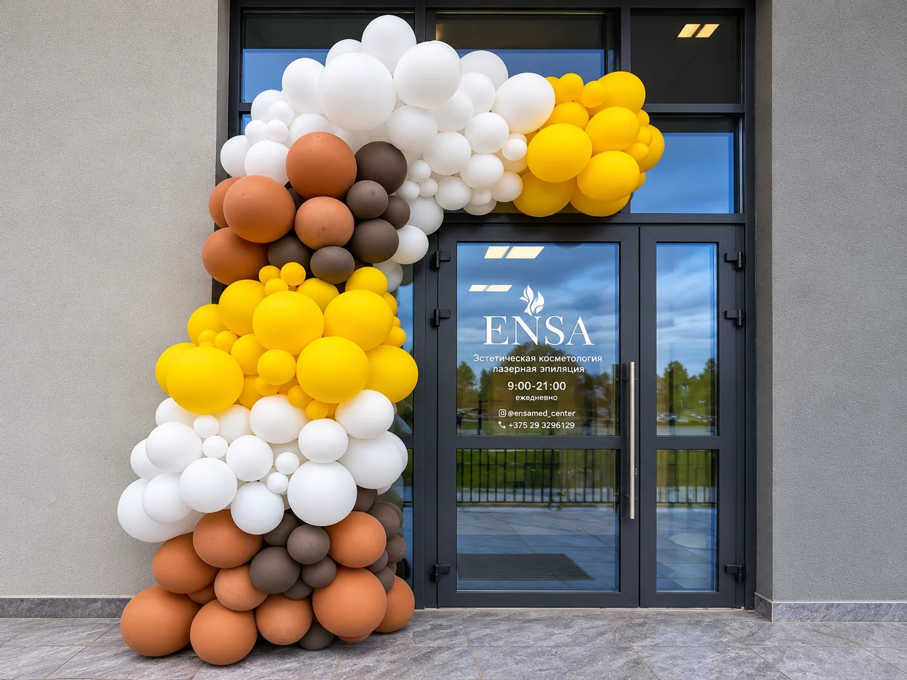
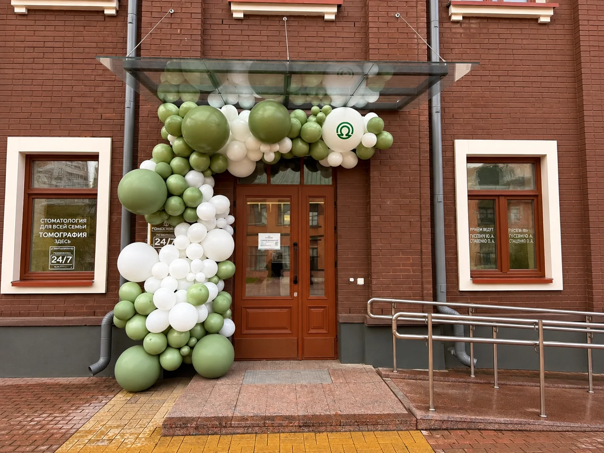
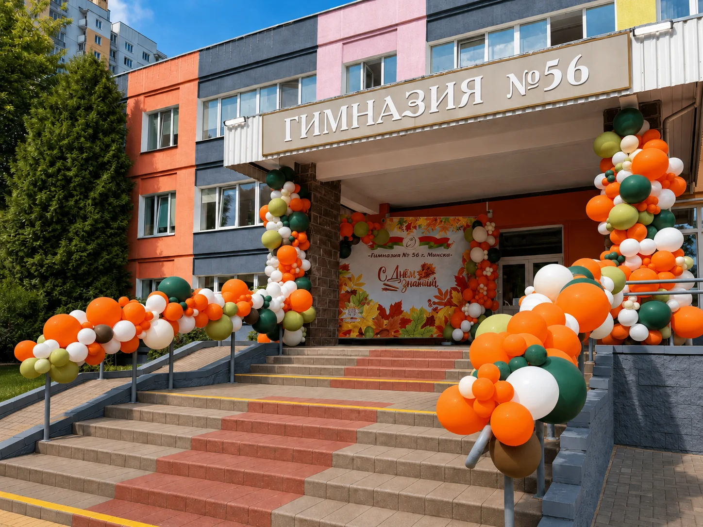

Первое впечатление
Оформление, которое встречает гостей
Входная зона помогает сразу обозначить событие и сделать пространство заметным ещё до того, как гость окажется внутри.
Выделяет вход для гостей и прохожих, помогает быстрее заметить новое место.
С первых минут задаёт настроение открытия, праздника или презентации.
Повторяет фирменную палитру, стиль и визуальные акценты компании.
Становится дополнительным местом для фотографий, сторис и публикаций гостей.
Для бизнеса и событий
Где оформляем входные зоны
Подбираем масштаб, материалы и способ крепления под фасад, помещение, поток посетителей и продолжительность оформления.
Вход к открытию, сезонному меню или праздничному дню.
Декор открытия и заметный welcome-акцент у входа.
Сдержанное оформление в цветах бренда и интерьера.
Входная группа для запуска, акции или обновления пространства.
Оформление к 1 сентября, выпускному и важным датам.
Welcome-зона для гостей, сотрудников и делового события.
Вход как часть единой концепции бренд-мероприятия.
Выразительный декор для первого дня работы и контента.
Если для события нужна отдельная зона внутри площадки, посмотрите фотозоны и бренд-зоны для корпоративных мероприятий.
Состав проекта
Что можно использовать в оформлении
Составляем композицию из тех элементов, которые подходят месту, задаче и визуальному стилю.
Органические гирлянды, арки и асимметричные композиции.
Декоративные панели, стойки, объёмные элементы и флористические акценты.
Логотипы, фирменные цвета, надписи и печатные детали.
Приветственные таблички, указатели и индивидуальный декор под открытие.
Реальные проекты LavDragon
Примеры оформления входных зон
Каждый проект адаптирован под конкретный фасад, повод и палитру. Нажмите на фотографию, чтобы рассмотреть оформление.
Органическая арка из чёрных, оранжевых, кремовых и золотых шаров подчёркивает вход в заведение.

Арка из шаров оформляет вход и поддерживает праздничную атмосферу первого дня работы.

Белые и приглушённо-зелёные шары сочетаются с фасадом и визуальным стилем клиники.

Крыльцо и перила украшены объёмными осенними гирляндами из шаров к 1 сентября.
От заявки до готового входа
Как проходит работа
- 1. Заявка
Вы присылаете дату, адрес и кратко описываете задачу.
- 2. Обсуждение пространства
Смотрим фото и размеры входа, уточняем условия площадки.
- 3. Концепция
Подбираем палитру, композицию, материалы и брендовые детали.
- 4. Согласование
Фиксируем состав, внешний вид, сроки и итоговый расчёт.
- 5. Подготовка декора
Готовим конструкции, печать, шары, цветы и остальные элементы.
- 6. Монтаж
Доставляем и устанавливаем оформление до прихода гостей.
- 7. Демонтаж
При необходимости возвращаемся и аккуратно забираем декор.
Стоимость
Индивидуальный расчёт
Два входа с похожей площадью могут требовать разного декора и монтажа, поэтому стоимость считаем после короткого обсуждения задачи.
Пришлите фотографию входа, дату и пожелания — предложим состав оформления и подготовим понятный расчёт без привязки к цене чужого проекта.
Что влияет на стоимость
- Размер входной зоны
- Количество декора
- Количество шаров
- Использование цветов
- Декоративные конструкции
- Брендирование и печать
- Сложность монтажа
- Адрес
- Условия площадки
Перед заказом
FAQ — частые вопросы
Можно ли оформить вход в фирменных цветах?
Да. Подберём шары, цветы, конструкции, надписи и другие элементы в палитре бренда, чтобы оформление поддерживало стиль компании.
Можно ли добавить логотип компании?
Да. Логотип можно разместить на панели, табличке, наклейке, печатном элементе или отдельной брендированной конструкции.
Можно ли оформить вход только шарами?
Да. Для входа можно сделать органическую гирлянду, арку или асимметричную композицию из шаров с палитрой под фасад и событие.
Вы выполняете монтаж?
Да. Команда LavDragon доставляет декор, выполняет монтаж до начала события и при необходимости организует демонтаж.
За сколько дней лучше заказать оформление?
Для несложного оформления лучше обратиться за 7–10 дней. Для проекта с печатью, логотипом или индивидуальными конструкциями желательно заложить 2–4 недели.
Можно ли оформить открытие магазина, салона или кафе?
Да. Оформляем открытия магазинов, салонов, кафе, ресторанов, клиник и других заведений с учётом фасада, потока гостей и фирменного стиля.
Можно ли разработать оформление по фотографии или фирменному стилю?
Да. Можно прислать фотографию входа, референс или брендбук. Мы адаптируем идею под реальные размеры, условия монтажа и доступный бюджет.